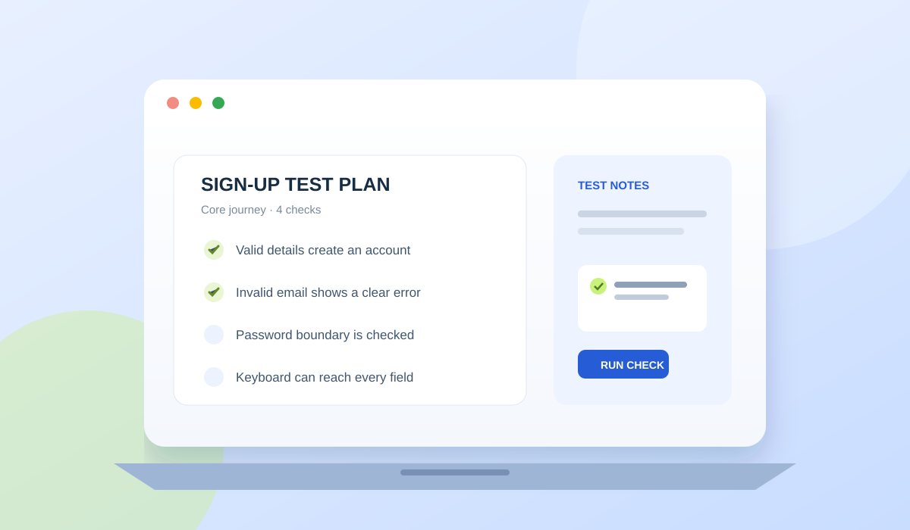

01 / FOUNDATION · BEGINNER
Manual testing
Learn a repeatable way to understand a feature, choose useful checks, explore risks, and communicate what you find. No programming experience is required.
What you will learn
- How quality assurance reduces product risk throughout development.
- How to turn a requirement into clear, testable conditions.
- How to design normal, boundary, negative, and exploratory checks.
- How to record results and write a useful bug report.
Course lessons
1. Understand the feature and its risks
Start with the user, their goal, and the expected outcome. Read the acceptance criteria, sketch the main flow, and list assumptions. Ask what could go wrong: invalid data, interrupted actions, permission differences, slow responses, or older data. Rank risks by impact and likelihood so testing time goes to the areas that matter most.
2. Design checks before you click
Write a small set of checks that cover the happy path, boundaries, invalid inputs, and important state changes. A test case should say what is needed, what action to take, and what observable result is expected. Equivalence partitioning helps reduce redundant inputs; boundary analysis focuses attention around limits such as minimum and maximum values.
3. Execute and explore
Follow planned checks, but stay curious. Compare the actual behavior with the expected result and record the environment and data used. In an exploratory session, set a short mission such as “investigate account recovery when email delivery is delayed.” Follow clues, vary one factor at a time, and capture notes as you go.
4. Report findings clearly
A strong bug report includes a concise title, setup or preconditions, numbered reproduction steps, expected behavior, actual behavior, and evidence. Include browser, device, build, and test data when relevant. Describe impact rather than guessing at the technical cause. Check whether the issue is reproducible and whether it already exists before filing it.
5. Practice: test a sign-up form
Test a form with name, email, and password fields. Try valid data, each field empty, malformed email, whitespace, a password at the minimum length, and a value just below it. Submit twice, refresh after success, and try keyboard-only navigation. Record at least one test case and write a sample report for any unexpected result.